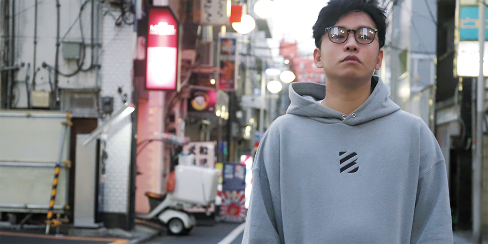

Story
歪なまま進め。すべては、次の革新へ。
「BE-TRIP」は、見えているのに触れられない距離をテーマにしたミニマルなエレクトロニックポップ。
反復するシンセと抑えたビートの上で、感情が少しずつ輪郭を取り戻していく。
Song page
透明な部屋に閉じ込めた言葉が、静かに光へ変わっていく。
YUKIは、夜の記憶を映画のように聴かせるアーティストプロジェクト。
Story
「BE-TRIP」は、見えているのに触れられない距離をテーマにしたミニマルなエレクトロニックポップ。
反復するシンセと抑えたビートの上で、感情が少しずつ輪郭を取り戻していく。
些細な抜け殻､拾い集めたら
自身の何かが変わる気がしたんだ｡
歪な形もスパイスにしてさ､
凹凸な時間さえ何故か心地良い｡
汗水流しても､認めた結末へ｡
辿れたら…見通せたなら…
名声を刻み､掲げ､歴史に名を残し､
軌跡を記し書物へ｡
暗闇を抜けた先に広がる景色を求めて｡
3.2.1 Ready…
限りある時間､手法を重ねて
継続だけでは叶えられない｡
経験の中で紡ぎ合っていく｡
人との出会いが財産になるよ｡
いつの日か憧れの場所に立ち｡
その時に視えてくる｡
今はモノクロだけど｡
プライドに負けて､挫折､言い訳､甘えに浸って殻に逃げてた｡
過去に縛られず､未来､今日に全てを注ぎ込んで｡
3.2.1 Ready…
名声を刻み､掲げ､歴史に名を残し､
軌跡を記し書物へ｡
暗闇を抜けた先に広がる景色を求めて｡
3.2.1 Ready…Action！！

まだ知らない景色へ、 感情ごと飛び込んでいく。
"旅は、心を動かすためにある。"
STREAM NOW
Other songs